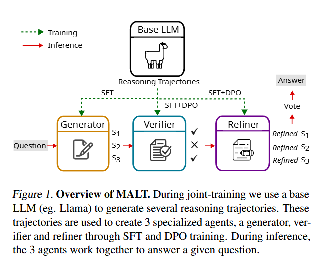
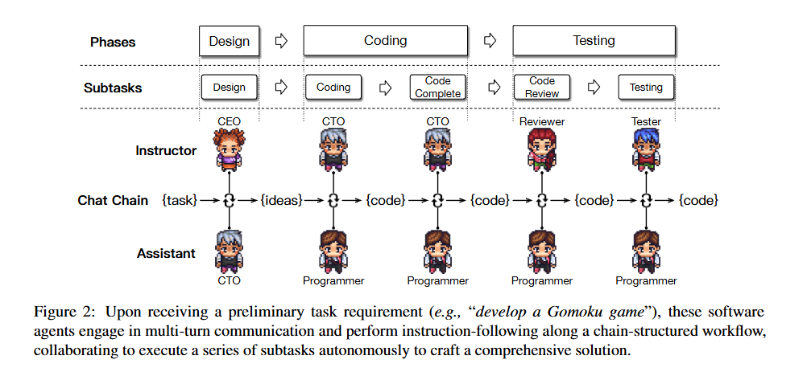

读paper14-Multi-Agent-2
读paper14-Multi-Agent-2
MALT: Improving Reasoning with Multi-Agent LLM Training
采用顺序多代理设置，异构 LLM 分配专门的角色：生成器、验证器和迭代解决问题的完善模型。我们提出了一种基于轨迹扩展的合成数据生成过程和一种由基于结果的联合奖励驱动的信用分配策略。
MALT 包括以下步骤：
- 单独生成合成数据：为每个基准单独生成合成数据。
- 基于联合二元奖励的信用分配启发式方法：在此过程中，每个基准的训练集由可用于比较的真实答案组成，用于在搜索过程的叶节点上生成二元奖励。基于此方法，为每个模型生成特定角色的训练数据。
- 模型训练：训练遵循上述配置，首先进行 SFT（监督微调），然后在 SFT 策略的基础上进行 DPO（直接偏好优化）。
在实践中，对长文本序列进行训练可能会不稳定或产生幻觉。为了解决这个问题，MALT 在推理过程中采用了一种简单的多数表决机制，由三个productions来确保自洽性。由于推理不需要树形搜索过程，而且与baseline推理遵循相同的顺序模式，因此计算效率很高.
Inference Setting
研究假设存在 ，其中 是自然语言问题集， 是所有可能的回答的集合。
框架包含三个agent：
- Generator（）：用于对问题产生初步的回答
- Verifier（）：对生成的回复进行评价，找出可能存在的错误
- Refinement Model（）：整合反馈以改进最终预测

其中 是每个模型可能的prompt， 是可能的输出的集合。agents间的交互定义如下：
使用 表示对应模型的参数集，整个系统可以表示为：
捕捉推理轨迹（trajectory）
对于问题 定义 reasoning trace ，其中 是对应的模型的 reasoning steps (outputs)
结果奖励模型 ，用于评估 是否正确。对于 predicted answer 与 ground truth
为了生成多样化的推理轨迹，对所有模型采用了以下分支因子为 n 的抽样策略
对于训练集中的每个问题 ，我们从Generator中抽取 n 个completions
对于每个Generator的输出 ，生成 个验证：
对于每个验证器输出 ，生成对应完善
这个过程对每个训练样例产生 个轨迹，然后用结果奖励模型来评判其正确性
为了有效利用细化输出的奖励信号，我们采用了价值迭代法，通过推理链向后传播价值。具体来说，我们根据每个节点的后代叶子节点（refinement output）的值，计算每个节点（生成器和验证器输出）的期望值。这种全局汇集机制可确保数值准确反映每个节点的整体表现，为正确的最终答案做出贡献。
这里没太看懂这种全局汇集机制
价值迭代法在进行二值化时，类似于基于多数的全局池化：对于给定的节点和分支，子树中叶子节点的二值奖励决定了分支的有用性，类似于通过树传播的二值化。与此相反，局部集合仅根据分支直接子节点的多数结果来确定分支的二进制值，并将这一过程传播到叶节点。
通过这种价值迭代过程，我们可以将正确性信息从叶子（refinement outputs）向上传播到根节点（generator output），从而捕捉推理轨迹中每个输出的整体有效性。
价值函数定义
使用 定义value of a refinement output：
作为其相关改进的预期值
然后计算其相关细化的期望值作为value of a verifier output
同样，计算与其相关的 verifier outputs的预期值作为the value of a generator output
偏好数据生成
Refinement Model Training
每个 refinement output 有一个关联值 ，对于偏好对 ， 是正确的refinement ， 则对应 ：
Verifier and Generator Model Training
对于每个 verifier output ，计算其值并进行二值化：
验证模型的偏好对是通过对同一generator output 下的输出进行组合而创建的:
类似的过程也适用于生成器模型，其中generator outputs 根据其值 进行二值化，并通过比较同一query 下的输出创建偏好对 。
Scaling Large-Language-Model-based Multi-Agent Collaboration
ChatDev 引入了聊天链，将每个阶段进一步分解成更小、更易于管理的子任务，从而引导不同角色之间的多轮交流，为每个子任务提出并验证解决方案。此外，为了减少意外的冲突，还设计了一种名为 communicative dehallucination 的交流模式。
因此，ChatDev 采用了瀑布模型的核心原则， 将软件开发流程分为三个连续阶段：设计、编码和测试。如图 2 所示，编码阶段进一步细分为代码编写和完成两个子任务，而测试阶段则细分为代码审查（静态测试）和系统测试（动态测试）。

Chat Chain
ChatDev使用带有顺序阶段 () 的聊天链 ()，每个阶段包括顺序子任务 ()。在每个子任务中，都有两个代理，他们各自扮演着不同的角色（例如，擅长识别无限循环的审查员和擅长图形用户界面开发的程序员），分别履行导师（）和助理（）的职能。导师代理发出指令，指示（）话语完成子任务，而助理代理则遵守这些指令，并用（）表示适当的解决方案做出回应。他们进行多轮对话 ()，相互合作直到达成共识，提取 () 从文本（如定义软件功能点）到代码（如创建源代码的初始版本）的解决方案，最终完成子任务。代理工作流的整个任务解决过程可表述为
Agentization
ChatDev双代理通信设计，通过避免复杂的多代理拓扑结构，简化了通信，简化了达成共识的过程。然而，简单地（在两个agent间）交换回复并不能实现有效的多轮任务导向型交流，因为它不可避免地面临着角色翻转、指令重复和虚假回复等挑战。
因此，ChatDev 采用了 inception prompting机制（Li 等人，2023a）来启动、维持和结束代理的通信，以保证工作流程的稳健和高效。该机制由 instructor system prompt 和 assistant system prompt 组成。这两种角色的系统提示大多是对称的，包括当前子任务的概述和目标、特定角色、可访问的外部工具、通信协议、终止条件以及避免不良行为的约束或要求。然后基于这两个prompt来实例化 导师和助理
Memory
为了避免上下文长度限制agent保持完整通信记录的能力，我们根据聊天链的性质，将代理的上下文记忆按其顺序阶段进行了相应的划分，形成了两种功能不同的记忆类型：短期记忆和长期记忆。短期记忆用于保持单个阶段内对话的连续性，而长期记忆则用于保持不同阶段的上下文意识。
通过只共享每个子任务的解决方案而不是整个交流历史，ChatDev 最大限度地降低了被过多信息淹没的风险，从而提高了每个任务的专注度，鼓励更有针对性的合作，同时促进了跨阶段情境的连续性。
Communicative Dehallucination：针对大模型幻觉
LLM 经常会产生编码幻觉，包括不完整的实现、不可执行的代码和不符合要求的不一致性等潜在问题。编码幻觉经常出现在助手难以精确遵从指令的情况下，这通常是由于某些指令的模糊性和概括性，使得助手难以完全遵从指令。
我们引入了 Communicative Dehallucination，鼓励助手在做出正式回应之前积极向导师寻求更详细的建议。
一般来说，导师与助手之间的交流模式是一种简单明了的指令-回应模式，即上面的 。相比之下，我们的 communicative dehallucination 机制具有刻意的 “角色转换 ”特点，即助手扮演类似于导师的角色，在给出结论性回复之前主动寻求更具体的信息（例如，外部依赖关系的精确名称及其相关类）。在指导员提出具体的修改建议后，助手开始进行精确优化。
由于这种机制一次只处理一个具体问题，因此需要多轮通信来优化各种潜在问题。通信模式指导代理如何进行通信，实现更细粒度的信息交换，从而有效优化解决方案，这实际上有助于减少编码幻觉。
Limitations
首先，虽然代理可以提高开发质量，但它们往往执行简单的逻辑，导致信息密度低。如果没有明确、详细的要求，代理很难掌握任务的思路
其次，与传统的函数级代码生成不同，通用软件的自动化评估非常复杂。论文强调完整性、可执行性、一致性和总体质量，但未来的研究应考虑功能性、鲁棒性、安全性和用户友好性等其他因素。
第三，与单个代理方法相比，多个代理需要更多的token和时间，从而增加了计算量。未来的研究应着眼于以更少的交互增强代理能力。
个人认为瀑布流还是太理想化，更复杂的软件工程实践或许会有更好的效果，但是其信息交换与上下文限制等问题也会更显著。